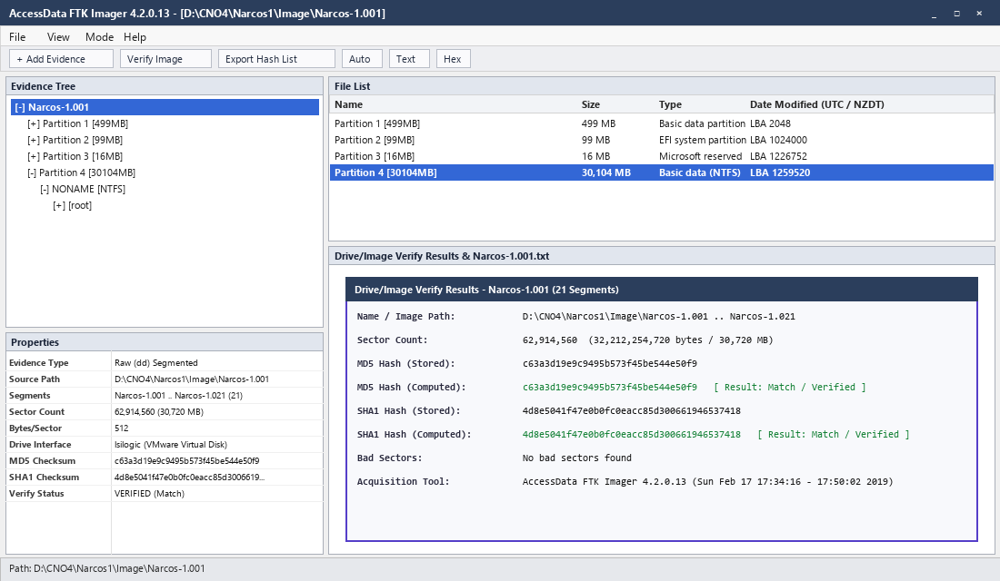
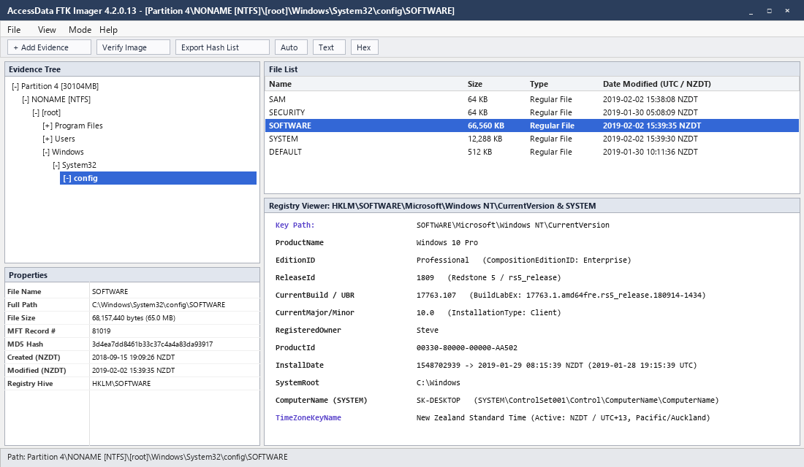
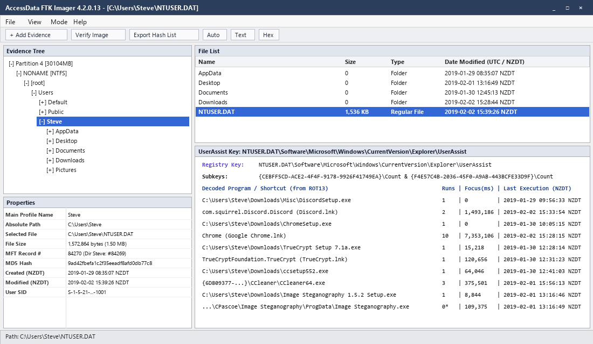
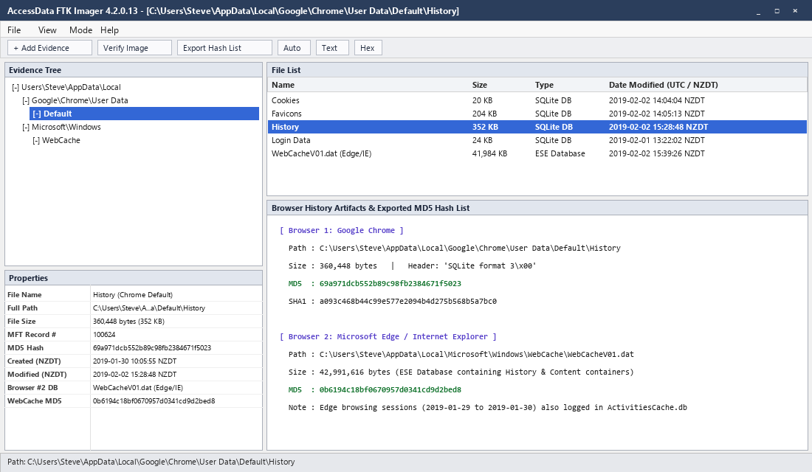
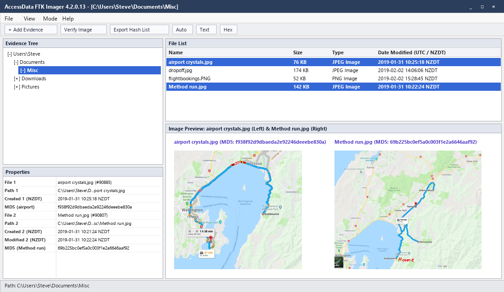
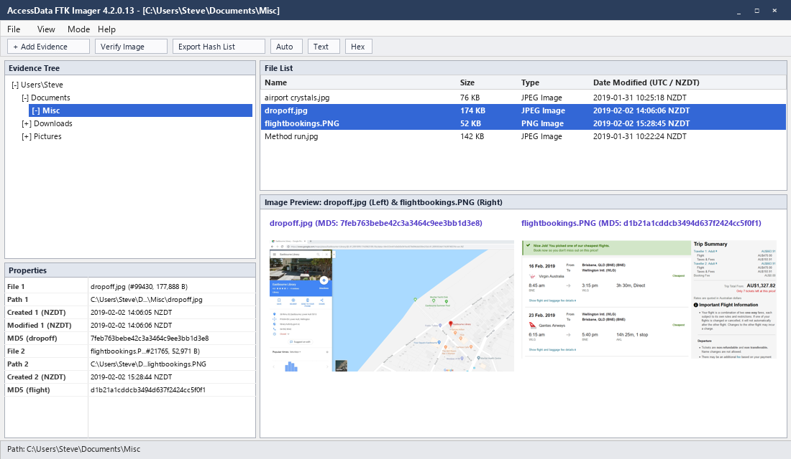
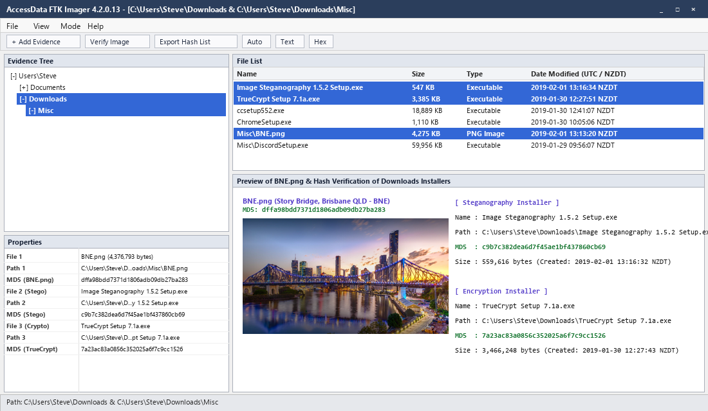
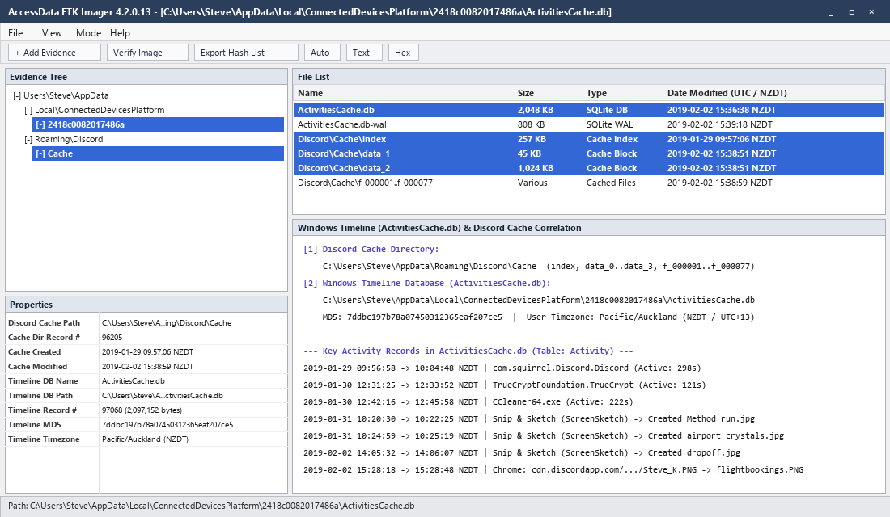
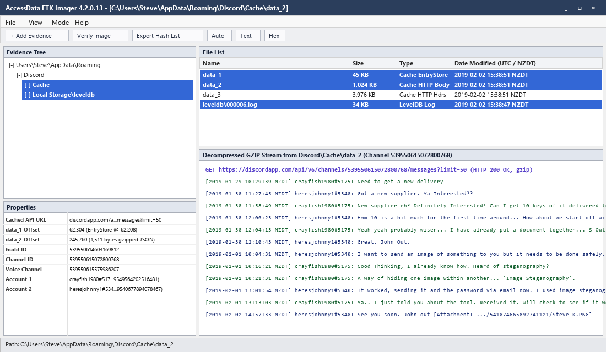
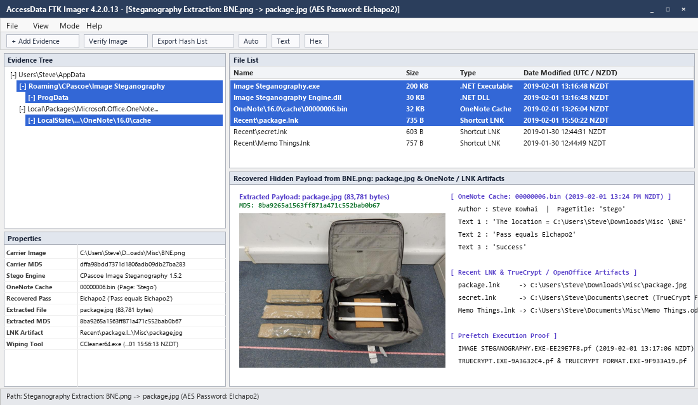

PR03. OPERACIÓN NARCOS: EXPEDIENTE KOWHAI
Análisis Forense Digital (NARCOS-1)
Introducción y Contexto del Caso
El presente dictamen pericial documenta el examen forense digital practicado sobre la imagen forense Narcos-1 (distribuida en un archivo comprimido multivolumen de 15 partes Narcos1.zip.001 a Narcos1.zip.015 que contiene 21 segmentos crudos Narcos-1.001 a Narcos-1.021 y su registro de adquisición Narcos-1.001.txt), correspondiente al equipo de escritorio incautado en un domicilio de Petone (Lower Hutt, Wellington, Nueva Zelanda) vinculado a Steve Kowhai.
Antecedentes de la operación: Una operación internacional de inteligencia alertó a las autoridades neozelandesas sobre el ingreso de sustancias ilícitas desde Australia. Dos pasajeros procedentes de Australia, identificados como John Fredricksen y Jane Esteban, fueron interceptados por agentes aduanales en el Aeropuerto Internacional de Wellington (WLG) con un kilogramo de metanfetamina oculto en el doble fondo de una maleta. Las indagatorias revelaron dos posibles puntos asociados con la entrega: la biblioteca de Eastbourne (Eastbourne Library) y un inmueble en Petone donde se localizaron sustancias ilícitas, armas de fuego y la computadora de escritorio analizada.
Metodología y preservación de integridad (ISO/IEC 27037): Se conservaron intactos los 15 volúmenes originales en D:\CNO4\ y se extrajeron los 21 segmentos de la imagen de disco (32,212,254,720 bytes / 30,720 MB / 62,914,560 sectores de 512 bytes, esquema de particiones GPT con la partición principal de Windows en Partition 4 [30104MB] NTFS, LBA inicial 1,259,520). Mediante AccessData FTK Imager 4.2.0.13 se verificó la integridad criptográfica completa de la imagen frente a las firmas de adquisición:
- MD5 de la imagen (
Narcos-1.001..021):c63a3d19e9c9495b573f45be544e50f9— VERIFICADO (Coincidencia exacta / Match). - SHA-1 de la imagen (
Narcos-1.001..021):4d8e5041f47e0b0fc0eacc85d300661946537418— VERIFICADO (Coincidencia exacta / Match).

Narcos-1.001..021 y verificación de integridad criptográfica MD5 y SHA-1 en AccessData FTK Imager.Parte I. Extracción e Identificación de Evidencia Digital
A. Sistema operativo y navegación
1. ¿Qué edición y versión de Windows se encuentran instaladas en el equipo? Indica el artefacto donde se obtiene la información.
- Valor exacto: Windows 10 Pro (
EditionID: Professional,CompositionEditionID: Enterprise), Versión 1809 (ReleaseId: 1809, ramars5_release, Build 17763.107 /BuildLabEx: 17763.1.amd64fre.rs5_release.180914-1434, arquitectura de 64 bits). Propietario registrado:Steve; Nombre de equipo:SK-DESKTOP; Fecha de instalación:2019-01-29 08:15:39 NZDT(1548702939Unix Epoch); Zona horaria:New Zealand Standard Time(operando en horario de verano NZDT / UTC+13,Pacific/Auckland). - Ruta dentro de la imagen y artefacto: Colmena del Registro
C:\Windows\System32\config\SOFTWARE(en FTK Imager:Partition 4 [30104MB]\NONAME [NTFS]\[root]\Windows\System32\config\SOFTWARE, Registro MFT#81019, MD5:3d4ea7dd8461b33c37c4a4a83da93917), claveHKLM\SOFTWARE\Microsoft\Windows NT\CurrentVersion(complementado conC:\Windows\System32\config\SYSTEMparaComputerNameyTimeZoneInformation). - Herramienta / procedimiento: Localización y exportación de la colmena
SOFTWAREen FTK Imager e inspección de valores de la claveMicrosoft\Windows NT\CurrentVersion.

Windows 10 Pro v1809, Build 17763.107) desde el hive SOFTWARE.2. ¿Cuál es el nombre de la carpeta del perfil principal y cuál es su ruta absoluta?
- Valor exacto (Nombre de la carpeta):
Steve(SID:S-1-5-21-1474204758-2504895174-1356074821-1001, creada el2019-01-29 08:35:07 NZDT). - Ruta absoluta:
C:\Users\Steve(Ruta en la imagen:Partition 4 [30104MB]\NONAME [NTFS]\[root]\Users\Steve, entrada MFT#84269). - Herramienta / procedimiento: Navegación en el árbol de evidencias (Evidence Tree) de FTK Imager bajo
[root]\Users.
3. ¿Cuál es la ruta de la clave UserAssist que registra actividad de programas en el perfil principal?
- Artefacto en disco y ruta absoluta: Colmena de usuario
C:\Users\Steve\NTUSER.DAT(entrada MFT#84270, tamaño1,572,864 bytes, MD5:9ad42fbefa1c2f35eeadf8afd0db77c8). - Ruta exacta de la clave UserAssist:
NTUSER.DAT\Software\Microsoft\Windows\CurrentVersion\Explorer\UserAssist(o bajoHKEY_CURRENT_USER), cuyas subclaves{CEBFF5CD-ACE2-4F4F-9178-9926F41749EA}\Count(ejecutables) y{F4E57C4B-2036-45F0-A9AB-443BCFE33D9F}\Count(accesos directos) almacenan en cifrado ROT13 los programas ejecutados por Steve, número de ejecuciones, tiempo de foco y marca temporal LastExecuted.

C:\Users\Steve, archivo NTUSER.DAT y decodificación ROT13 de la clave UserAssist.4. ¿Qué dos navegadores presentan artefactos de actividad? Identifica el archivo o base de datos del historial de cada uno.
- Navegador 1 — Google Chrome (v72.0.3626.81): Su historial se almacena en la base de datos SQLite 3 llamada
History, ubicada en la ruta absoluta:C:\Users\Steve\AppData\Local\Google\Chrome\User Data\Default\History(MFT#100624; registra actividad entre el2019-01-30 10:06:37 NZDTy el2019-02-02 15:28:48 NZDT). - Navegador 2 — Microsoft Edge / Internet Explorer: Su historial y caché web se almacenan en la base de datos ESE (Extensible Storage Engine) llamada
WebCacheV01.dat, ubicada en la ruta absoluta:C:\Users\Steve\AppData\Local\Microsoft\Windows\WebCache\WebCacheV01.dat(MFT#84625, tamaño42,991,616 bytes, MD5:0b6194c18bf0670957d0341cd9d2bed8; utilizado el2019-01-29y la mañana del2019-01-30para navegar y descargar Google Chrome).
5. ¿Cuál es el hash MD5 del archivo History del perfil predeterminado de Chrome?
- Hash MD5 exacto:
69a971dcb552b89c98fb2384671f5023(SHA-1:a093c468b44c99e577e2094b4d275b568b5a7bc0, tamaño:360,448 bytes). - Ruta y procedimiento:
C:\Users\Steve\AppData\Local\Google\Chrome\User Data\Default\History; obtenido en FTK Imager mediante clic derecho → Export File Hash List.

History, MD5 69a971dcb552b89c98fb2384671f5023) y Edge (WebCacheV01.dat).B. Documentos, imágenes y metadatos
6. ¿Cuál es la ruta absoluta del archivo airport crystals.jpg?
- Ruta absoluta:
C:\Users\Steve\Documents\Misc\airport crystals.jpg(En la imagen:Partition 4 [30104MB]\NONAME [NTFS]\[root]\Users\Steve\Documents\Misc\airport crystals.jpg, entrada MFT#90885, tamaño77,643 bytes).
7. ¿Cuál es la fecha y hora de creación de airport crystals.jpg (NZDT)?
- Fecha y hora de creación (NZDT):
2019-01-31 10:25:18 NZDT(31 de enero de 2019 a las 10:25:18 a. m. en horario de verano de Nueva ZelandaUTC+13; equivalente a2019-01-30 21:25:18 UTCen el atributo$STANDARD_INFORMATIONde la MFT). Hash MD5:f938f92d9dbaeda2e92246deeebe830a.
8. ¿Cuál es el hash MD5 completo de dropoff.jpg?
- Hash MD5 exacto:
7feb763bebe42c3a3464c9ee3bb1d3e8(Ruta absoluta:C:\Users\Steve\Documents\Misc\dropoff.jpg, entrada MFT#99430, tamaño177,888 bytes).
9. ¿Cuál es la fecha y hora de última modificación de dropoff.jpg (NZDT)?
- Fecha y hora de última modificación (NZDT):
2019-02-02 14:06:06 NZDT(2 de febrero de 2019 a las 14:06:06 / 02:06:06 p. m. NZDTUTC+13; equivalente a2019-02-02 01:06:06 UTC; creado un segundo antes a las2019-02-02 14:06:05 NZDT).
10. ¿Cuál es el nombre exacto y la ruta del archivo de imagen relacionado con reservaciones de vuelo en Documents\Misc?
- Nombre exacto del archivo:
flightbookings.PNG(descargado desde el CDN de Discord bajo el nombre originalSteve_K.PNGy guardado comoflightbookings.PNG). - Ruta absoluta:
C:\Users\Steve\Documents\Misc\flightbookings.PNG(MFT#21765, tamaño52,971 bytes, MD5:d1b21a1cddcb3494d637f2424cc5f0f1, Creado:2019-02-02 15:28:44 NZDT, Modificado:2019-02-02 15:28:45 NZDT).
11. ¿Cuál es el hash MD5 del archivo Method run.jpg?
- Hash MD5 exacto:
69b225bc0ef5a0c003f1e2a6646aaf92(Ruta absoluta:C:\Users\Steve\Documents\Misc\Method run.jpg, entrada MFT#90807, tamaño145,213 bytes, Creado:2019-01-31 10:21:24 NZDT, Modificado:2019-01-31 10:22:24 NZDT).

airport crystals.jpg y Method run.jpg.
dropoff.jpg y flightbookings.PNG.Archivo en Documents\Misc |
MFT # | Tamaño | Creación (NZDT / UTC+13) | Modificación (NZDT / UTC+13) | Hash MD5 Comprobado |
|---|---|---|---|---|---|
Method run.jpg |
90807 | 145,213 B | 2019-01-31 10:21:24 NZDT | 2019-01-31 10:22:24 NZDT | 69b225bc0ef5a0c003f1e2a6646aaf92 |
airport crystals.jpg |
90885 | 77,643 B | 2019-01-31 10:25:18 NZDT | 2019-01-31 10:25:18 NZDT | f938f92d9dbaeda2e92246deeebe830a |
dropoff.jpg |
99430 | 177,888 B | 2019-02-02 14:06:05 NZDT | 2019-02-02 14:06:06 NZDT | 7feb763bebe42c3a3464c9ee3bb1d3e8 |
flightbookings.PNG |
21765 | 52,971 B | 2019-02-02 15:28:44 NZDT | 2019-02-02 15:28:45 NZDT | d1b21a1cddcb3494d637f2424cc5f0f1 |
C. Programas y otros artefactos
12. ¿Cuál es el hash MD5 completo de BNE.png?
- Hash MD5 exacto:
dffa98bdd7371d1806adb09db27ba283 - Ruta absoluta y metadatos:
C:\Users\Steve\Downloads\Misc\BNE.png(MFT#21202, tamaño4,376,793 bytes; descargado inicialmente enC:\Users\Steve\Downloads\BNE.pngdesde ProtonMail el2019-02-01 13:13:19 NZDTy movido a la subcarpetaDownloads\Misc\BNE.pngel2019-02-01 13:15:20 NZDT).
13. ¿Cuál es el nombre, ruta y MD5 del instalador de una herramienta de esteganografía en Downloads?
- Nombre exacto:
Image Steganography 1.5.2 Setup.exe - Ruta absoluta:
C:\Users\Steve\Downloads\Image Steganography 1.5.2 Setup.exe(MFT#96893, tamaño559,616 bytes, descargado desde SourceForge el2019-02-01 13:16:32 NZDT). - Hash MD5 exacto:
c9b7c382dea6d7f45ae1bf437860cb69
14. ¿Cuál es el nombre y la ruta del instalador de una herramienta de cifrado encontrado en Downloads?
- Nombre exacto:
TrueCrypt Setup 7.1a.exe - Ruta absoluta:
C:\Users\Steve\Downloads\TrueCrypt Setup 7.1a.exe(MFT#86637, tamaño3,466,248 bytes, MD5:7a23ac83a0856c352025a6f7c9cc1526, descargado desde Softpedia el2019-01-30 12:27:43 NZDT).
15. ¿Cuáles son las rutas de la caché de Discord y de ActivitiesCache.db utilizada por Windows Timeline?
- Ruta absoluta de la caché de Discord:
C:\Users\Steve\AppData\Roaming\Discord\Cache(MFT#96205, creada el2019-01-29 09:57:06 NZDTy modificada por última vez el2019-02-02 15:38:59 NZDT; contiene el índiceindex, los bloquesdata_0adata_3y los objetos en cachéf_000001af_000077). - Ruta absoluta de
ActivitiesCache.db(Windows Timeline):C:\Users\Steve\AppData\Local\ConnectedDevicesPlatform\2418c0082017486a\ActivitiesCache.db(MFT#97068, tamaño2,097,152 bytes, MD5:7ddbc197b78a07450312365eaf207ce5, asociada al LiveId2418c0082017486ade Steve Kowhai).

BNE.png y de los instaladores Image Steganography 1.5.2 Setup.exe y TrueCrypt Setup 7.1a.exe.
Discord\Cache y registros de actividad en ActivitiesCache.db (Windows Timeline).Parte II. Investigación, Interpretación y Análisis del Caso
1. Examen de flightbookings.PNG, BNE.png y dropoff.jpg: coincidencias sobre lugares, desplazamientos y logística
-
Lo observado en la evidencia (Narcos-1):
1)BNE.png(MD5dffa98bdd7371d1806adb09db27ba283): Descargado el2019-02-01 13:13:19 NZDTdesde el correo cifrado ProtonMail (crayfish1980@protonmail.com). Muestra una fotografía del puente Story Bridge en Brisbane, Queensland, Australia, cuyo código aeroportuario IATA es exactamenteBNE. Además, actúa como imagen portadora esteganográfica que oculta el archivo cifrado con AESpackage.jpg(MD58ba9265a1563ff871a471c552bab0b67), el cual muestra tres paquetes rectangulares envueltos en cinta café ocultos bajo el forro de una maleta.
2)flightbookings.PNG(MD5d1b21a1cddcb3494d637f2424cc5f0f1): Descargado el2019-02-02 15:28:26 NZDTdesde un adjunto de Discord (.../539550615072800768/541074665892741121/Steve_K.PNG) y guardado enC:\Users\Steve\Documents\Misc\flightbookings.PNGa las15:28:44 NZDT. Muestra una cotización/resumen de viaje (Trip Summary) porAU$1,327.82para 2 pasajeros adultos (Traveller 1: Adult, Traveller 2: Adult) con vuelo directo en Virgin Australia el 16 de febrero de 2019 desde Brisbane, QLD (BNE) (8:45 am) hacia Wellington Intl. (WLG) (3:15 pm), y retorno el 23 de febrero de 2019 de WLG a BNE vía Qantas.
3)dropoff.jpg(MD57feb763bebe42c3a3464c9ee3bb1d3e8): Creado el2019-02-02 14:06:05 NZDT(modificado a las14:06:06 NZDT) mediante Snip & Sketch tras buscar en Google Mapseastbourne library(14:04:36–14:05:24 NZDT). Muestra la ubicación exacta de Eastbourne Library (38 Rimu St, Eastbourne, Lower Hutt 5013, Wellington). -
Interpretación propuesta: Los tres archivos articulan la logística completa de la operación transnacional: el punto de origen del cargamento en Brisbane, Australia (
BNE) y el método de ocultamiento dentro del equipaje (BNE.png → package.jpg); el traslado aéreo internacional hacia Wellington (WLG) de dos correos humanos adultos (flightbookings.PNG), lo que concuerda con la intercepción de los dos pasajeros australianos (John Fredricksen y Jane Esteban) en el aeropuerto de Wellington con 1 kg de metanfetamina oculto en una maleta; y la selección de la Biblioteca de Eastbourne como punto de entrega local (drop-off,dropoff.jpg), coincidiendo con los informes de inteligencia policial. -
Lo que no puede confirmarse con la evidencia disponible: La imagen
flightbookings.PNGmuestra la pantalla previa de cotización ("Book now so you don't miss out on this price!") sin incluir los nombres de los pasajeros, número de PNR ni comprobante de pago emitido por la aerolínea; tampoco puede confirmarse únicamente con el disco si la entrega física en la biblioteca de Eastbourne llegó a consumarse.
2. Contraste de airport crystals.jpg y Method run.jpg con los registros de actividad del equipo
-
Lo observado en la evidencia: Al correlacionar las marcas de tiempo NTFS con
Chrome\History,ActivitiesCache.db(Windows Timeline),UserAssist,Prefetch\SCREENSKETCH.EXE-FCC53E40.pfy los archivos.lnkenRecentdel día 31 de enero de 2019 (NZDT), se observa una secuencia continua:
a) Entre las10:17:23y las10:24:13 NZDT, el usuario consultó en Google Maps rutas con múltiples paradas entre Eastbourne, Wainuiomata, Stokes Valley, Naenae y Cannons Creek (Porirua). A las10:20:30 NZDTejecutó la herramienta de recorte y anotación Snip & Sketch (Microsoft.ScreenSketch, activa durante 101 segundos hasta las10:22:25 NZDT), generando el archivoMethod run.jpg(creado a las10:21:24 NZDTy modificado a las10:22:24 NZDTtras trazar a mano alzada en color rojo la palabra"Home"junto al nodo de Eastbourne).
b) Inmediatamente después, entre las10:24:21y las10:24:45 NZDT, buscó en Google Maps la ruta desde Eastbourne, Lower Hutt hasta el Aeropuerto Internacional de Wellington (WLG) (cuyo trazado bordea la bahía pasando por Petone). Entre las10:24:59y las10:25:19 NZDTvolvió a activar Snip & Sketch (16 segundos de foco), guardando la captura comoairport crystals.jpgexactamente a las10:25:18 NZDT. Ese mismo día, entre las15:55:01y las15:59:35 NZDT, realizó búsquedas en Google sobrecrystal meth,drug paraphernalia methygangs nz drugs, descargando tres fotografías relacionadas enC:\Users\Steve\Pictures\(eliminadas posteriormente a la Papelera de reciclaje el2019-02-01 15:48:41 NZDT). -
Interpretación propuesta: Los nombres asignados por el propio usuario (
airport crystals.jpgaludiendo a cristales de metanfetamina en el aeropuerto, yMethod run.jpgcomo juego de palabras con "Meth run" o circuito de reparto), sumados a la anotación manuscrita"Home"y al paso por Petone, sostienen que su finalidad era planificar la ruta de recolección del cargamento en el Aeropuerto de Wellington (WLG) hacia Petone/Eastbourne y diseñar el circuito logístico de distribución local por los suburbios de Lower Hutt (Wainuiomata, Naenae y Stokes Valley). - Lo que no puede confirmarse: Una captura de ruta en Google Maps demuestra actos preparatorios y planificación logística en el equipo, pero no prueba por sí sola que el usuario haya recorrido físicamente dichos trayectos (lo cual requiere telemetría GPS, registros celulares o cámaras de peaje/tránsito).
3. Evidencia de presencia y uso de Discord, alcances y límites de atribución
-
Lo observado (Presencia, instalación y uso):
1) Descarga e instalación: InstaladorC:\Users\Steve\Downloads\Misc\DiscordSetup.exe(creado el2019-01-29 09:56:03 NZDT, MD50e0d73ea5cea1e930a1a1349d0907ef5), registro de instalación enNTUSER.DAT\Software\Microsoft\Windows\CurrentVersion\Uninstall\Discord(v0.0.304 enC:\Users\Steve\AppData\Local\Discord,2019-01-29 09:56:50 NZDT) y acceso directoC:\Users\Steve\Desktop\Discord.lnk.
2) Ejecución activa: Registro enUserAssist(DiscordSetup.exe1 ejecución;com.squirrel.Discord.Discordcon1,493,186 ms ≈ 24.8 minde foco activo hasta el2019-02-02 15:33:54 NZDT), 4 archivos Prefetch (C:\Windows\Prefetch\DISCORD.EXE-794770A9/AA/AB/B1.pf) y 9 sesiones UserEngaged enActivitiesCache.dbentre el2019-01-29y el2019-02-02.
3) Artefactos de red, LevelDB y caché HTTP: EnDiscord\Local Storage\leveldb\000006.logse registra la conexión recurrente al servidor/guild539550614603169812, canal de texto539550615072800768y canal de voz539550615575986207. EnChrome\Historyconsta la descarga deflightbookings.PNGdesdehttps://cdn.discordapp.com/attachments/539550615072800768/541074665892741121/Steve_K.PNG. Además, al descomprimir el bloque GZIP almacenado enC:\Users\Steve\AppData\Roaming\Discord\Cache\data_2(offset245,760,1,511 bytes, vinculado a la peticiónGET https://discordapp.com/api/v6/channels/539550615072800768/messages?limit=50endata_1ydata_3del2019-02-02 15:16:55 NZDT), se recuperaron 16 mensajes verificables entrecrayfish1980#5175(quien firma "S Out" y cuyo correo en Chrome escrayfish1980@protonmail.com) yheresjohnny1#5340(quien firma "John Out"), donde acuerdan reducir un pedido inicial de 10 kg a 1 kg entregado en Wellington, intercambian un documento operativo, acuerdan usar la aplicación Image Steganography enviando la imagen y contraseña por correo, y finalmenteheresjohnny1envíaSteve_K.PNG(los vuelos BNE→WLG). -
Qué NO puede concluirse sin recuperar mensajes verificables (y límites de autoría): Si únicamente se consideraran los artefactos de instalación, ejecución o nombres de archivos en caché sin reconstruir el JSON de mensajes, no podría determinarse el contenido de las conversaciones, los acuerdos ilícitos ni los pseudónimos de los interlocutores. Asimismo, aun con los mensajes recuperados de la caché, no puede conocerse el contenido del canal de voz (
539550615575986207), ni puede atribuirse de manera absoluta la identidad física detrás del teclado del interlocutor remotoheresjohnny1#5340sin peritar los dispositivos incautados a John Fredricksen o requerir registros a Discord Inc.

539550615072800768 en Discord\Cache\data_2 entre crayfish1980#5175 y heresjohnny1#5340.4. Análisis de herramientas de esteganografía y cifrado: diferenciación entre descarga, instalación, ejecución y uso efectivo
En informática forense es indispensable no confundir la simple presencia de un instalador con su uso real. En Narcos-1 existen artefactos independientes que acreditan los cuatro niveles tanto para TrueCrypt 7.1a como para Image Steganography 1.5.2 (además del limpiador antiforense CCleaner 5.52):
| Nivel Forense | Herramienta de Cifrado (TrueCrypt 7.1a) | Herramienta de Esteganografía (Image Steganography 1.5.2) |
|---|---|---|
| 1. Descarga (Adquisición del binario) |
• Chrome History (tabla downloads): Descargado el 2019-01-30 12:27:43 NZDT desde softpedia.com/... (3,466,248 bytes).• Sistema de archivos (MFT #86637): C:\Users\Steve\Downloads\TrueCrypt Setup 7.1a.exe (MD5: 7a23ac83a0856c352025a6f7c9cc1526).
|
• Chrome History (tabla downloads): Descargado el 2019-02-01 13:16:32 NZDT desde sourceforge.net/projects/image-steg/... (559,616 bytes).• Sistema de archivos (MFT #96893): C:\Users\Steve\Downloads\Image Steganography 1.5.2 Setup.exe (MD5: c9b7c382dea6d7f45ae1bf437860cb69).
|
| 2. Instalación (Despliegue en el SO) |
• Registro (SOFTWARE): Clave WOW6432Node\Microsoft\Windows\CurrentVersion\Uninstall\TrueCrypt creada el 2019-01-30 12:28:24 NZDT (v7.1a).• Directorio y driver: C:\Program Files\TrueCrypt\ (TrueCrypt.exe, TrueCrypt Format.exe), driver C:\Windows\System32\drivers\truecrypt.sys y acceso directo C:\Users\Public\Desktop\TrueCrypt.lnk.
|
• Directorio de aplicación (MFT #96907..96928): Instalado el 2019-02-01 13:16:49 NZDT en C:\Users\Steve\AppData\Roaming\CPascoe\Image Steganography\ProgData\ (Image Steganography.exe, Image Steganography Engine.dll).• Accesos directos: C:\Users\Steve\Desktop\Image Steganography.lnk y menú Inicio Programs\CPascoe.
|
| 3. Ejecución (Apertura del binario) |
• UserAssist (NTUSER.DAT): TrueCrypt Setup 7.1a.exe (1 vez, 12:28:14 NZDT) y TrueCryptFoundation.TrueCrypt (1 vez, foco 120,656 ms, 2019-01-30 12:31:23 NZDT).• Prefetch: TRUECRYPT SETUP 7.1A.EXE-CE6985BB.pf, TRUECRYPT.EXE-9A3632C4.pf (12:31:35 NZDT) y TRUECRYPT FORMAT.EXE-9F933A19.pf (12:31:39 NZDT).• Timeline: ActivitiesCache.db registra actividad de TrueCrypt entre 12:31:25 y 12:33:52 NZDT.
|
• UserAssist (NTUSER.DAT): Image Steganography 1.5.2 Setup.exe (1 vez, 13:16:46 NZDT) e Image Steganography.exe (foco activo durante 109,375 ms).• Prefetch y CLR Logs: IMAGE STEGANOGRAPHY 1.5.2 SET-2E2F282D.pf (13:16:56 NZDT), IMAGE STEGANOGRAPHY.EXE-EE29E7F8.pf (13:17:06 NZDT) y CLR_v4.0\UsageLogs\Image Steganography.exe.log (13:19:15 NZDT).
|
| 4. Uso efectivo (Operación sobre datos) |
• Creación y montaje de volumen: La ejecución del asistente TrueCrypt Format.exe (12:31:39 NZDT), el archivo AppData\Roaming\TrueCrypt\Configuration.xml (modificado a las 13:34:14 NZDT con LastSelectedDrive = F: y SaveVolumeHistory = 0) y el acceso directo Recent\secret.lnk (creado a las 12:35:30 NZDT apuntando a C:\Users\Steve\Documents\secret junto con Recent\Memo Things.lnk → Documents\Misc\Memo Things.odt) demuestran que se creó y montó un contenedor cifrado llamado secret en la unidad F:, eliminado posteriormente antes de ejecutar CCleaner64.exe (12:42:16 NZDT).
|
• Decodificación de BNE.png: En la caché de OneNote (00000006.bin, 2019-02-01 13:24 PM NZDT), Steve Kowhai creó la página "Stego" anotando: "The location = C:\Users\Steve\Downloads\Misc \BNE", "Pass equals Elchapo2" y "Success".• Extracción verificada: Al decodificar BNE.png con Image Steganography Engine.dll y la clave AES Elchapo2 se recupera package.jpg (83,781 bytes, MD5 8ba9265a1563ff871a471c552bab0b67), cuya apertura por el usuario quedó registrada en Recent\package.lnk (15:49:18 NZDT, apuntando a C:\Users\Steve\Downloads\Misc\package.jpg) antes de ser borrado y limpiado con CCleaner64.exe (15:56:13 NZDT).
|

BNE.png con la contraseña Elchapo2 (recuperada de OneNote), revelando package.jpg.5. Hipótesis sobre la relación del equipo con los hechos investigados, explicación alternativa, cuatro hallazgos y dos evidencias adicionales
-
Hipótesis principal (Participación directa en la coordinación, recepción y distribución): El equipo
SK-DESKTOP(perfilC:\Users\Steve, utilizado por Steve Kowhai bajo los aliascrayfish1980#5175en Discord ycrayfish1980@protonmail.comen ProtonMail) fungió como nodo central de planificación para la importación de 1 kg de metanfetamina desde Brisbane, Australia (BNE) hacia el Aeropuerto Internacional de Wellington (WLG) y su posterior recepción y distribución en Eastbourne, Petone y Lower Hutt. El usuario negoció el envío de 1 kg por Discord conheresjohnny1#5340("John"), redactó un documento operativo (Memo Things.odt) que resguardó o eliminó tras usar un contenedor TrueCrypt (C:\Users\Steve\Documents\secretmontado enF:), recibió por ProtonMail la imagen esteganográficaBNE.pngcon la contraseña AESElchapo2para extraer la fotografía del doble fondo de la maleta con los paquetes de droga (package.jpg), seleccionó la Biblioteca de Eastbourne como punto de entrega (dropoff.jpg), trazó las rutas de recolección aeroportuaria (airport crystals.jpg) y distribución local (Method run.jpg), recibió el itinerario de los dos vuelos BNE→WLG (flightbookings.PNG) y ejecutóCCleaner64.exepara borrar rastros. -
Explicación alternativa (Acceso por terceros o rol meramente documental sin posesión física): Dado que el equipo de escritorio se encontraba en un inmueble en Petone donde concurrían otros elementos y la cuenta local
Steveno evidencia bloqueos complejos de autenticación multifactor en los artefactos locales, una defensa técnica podría plantear que una tercera persona con acceso físico al domicilio en Petone utilizó la sesión abierta deSK-DESKTOPpara coordinar la entrega, o bien que Steve Kowhai únicamente recibió información digital preparatoria (cotizaciones de vuelos no confirmadas y mapas públicos) sin haber tenido contacto físico con la maleta interceptada en la aduana de Wellington. -
Cuatro hallazgos forenses contundentes que sustentan la hipótesis principal:
1) Comunicaciones en Discord y correo ProtonMail vinculadas a la identidad de Steve Kowhai: La sesión de OneNote (00000006.binyDocuments_en-NZ) identifica nominalmente a Steve Kowhai como autor de la nota "Stego"; el historial de Chrome vincula al mismo perfil concrayfish1980@protonmail.com, y la caché de Discord (data_2, canal539550615072800768) contiene la conversación entrecrayfish1980#5175("S Out") yheresjohnny1#5340("John Out") acordando explícitamente el envío de 1 kg a Wellington y el envío deSteve_K.PNG(guardado comoflightbookings.PNG, MD5d1b21a1cddcb3494d637f2424cc5f0f1) para 2 pasajeros en la ruta Brisbane (BNE) → Wellington (WLG).
2) Evidencia esteganográfica del ocultamiento en la maleta: El archivoC:\Users\Steve\Downloads\Misc\BNE.png(MD5dffa98bdd7371d1806adb09db27ba283), al ser descifrado con Image Steganography 1.5.2 y la contraseñaElchapo2anotada por Steve Kowhai en OneNote el2019-02-01 13:24 NZDT, contiene oculta la fotografíapackage.jpg(MD58ba9265a1563ff871a471c552bab0b67, abierta desdeDownloads\Misc\package.jpgsegúnRecent\package.lnk), que exhibe los paquetes de droga ocultos en el armazón de una maleta idéntica al modus operandi detectado en el aeropuerto de Wellington.
3) Cartografía operativa coincidente con los puntos de inteligencia policial: Las capturas creadas con Snip & Sketch enC:\Users\Steve\Documents\Misc\muestran la ruta del Aeropuerto de Wellington pasando por Petone hasta Eastbourne (airport crystals.jpg, MD5f938f92d9dbaeda2e92246deeebe830a,2019-01-31 10:25:18 NZDT), el circuito de reparto con Eastbourne rotulado como"Home"(Method run.jpg, MD569b225bc0ef5a0c003f1e2a6646aaf92) y la ubicación exacta de la Biblioteca de Eastbourne tras buscar en Googlebest places to trade drugs(dropoff.jpg, MD57feb763bebe42c3a3464c9ee3bb1d3e8,2019-02-02 14:06:06 NZDT).
4) Conducta antiforense deliberada (Cifrado y limpieza): La creación de un volumen TrueCrypt (Recent\secret.lnk → C:\Users\Steve\Documents\secret, montado enF:tras redactarMemo Things.odtel2019-01-30 12:31–12:35 NZDT) y la ejecución posterior de CCleaner (CCleaner64.exeel2019-01-30 12:42:16 NZDTy el2019-02-01 15:41:18 / 15:56:13 NZDTinmediatamente después de eliminarsecret,Memo Things.odt,package.jpgy las imágenes de metanfetamina) demuestran conciencia de ilicitud y ocultamiento intencional de evidencia. -
Dos evidencias adicionales necesarias para cerrar la investigación:
1) Análisis forense del volcado de memoria RAM (Narcos-Mem-1.001..003) y medios de almacenamiento externos (unidades USB / letraF:): Indispensable para extraer de la memoria volátil claves criptográficas en texto claro, artefactos de procesos activos (DumpIt.exefue ejecutado el2019-01-29 17:31:41 NZDTy el2019-02-01 16:00:33 NZDT) y localizar en dispositivos externos o espacio no asignado el contenedor TrueCryptsecrety el documentoMemo Things.odt.
2) Peritaje forense a los teléfonos móviles/dispositivos de John Fredricksen y Jane Esteban e informes oficiales de Discord Inc., ProtonMail y Virgin Australia / Aduanas NZ: Necesario para confirmar que la cuentaheresjohnny1#5340pertenecía a John Fredricksen, verificar la emisión real de los boletos del vuelo BNE→WLG y cotejar físicamente la maleta fotografiada enpackage.jpgcon la maleta asegurada en el aeropuerto de Wellington.
Referencias Bibliográficas
- [Referencia Obligatoria — Conjuntos de Datos Forenses Estandarizados]: Garfinkel, S., Farrell, P., Roussev, V., & Dinolt, G. (2009). Bringing Science to Digital Forensics with Standardized Forensic Corpora. Digital Forensic Research Workshop (DFRWS), Montreal, Canadá. https://simson.net/clips/academic/2009.DFRWS.Corpora.pdf
- [Referencia Obligatoria — Escenario de Evidencia de Práctica]: Digital Corpora. (2019). 2019 Narcos Scenario (Narcos-1 Forensic Disk Image & Memory Dump) [Conjunto de datos forenses para entrenamiento e investigación]. Digital Corpora Project. https://digitalcorpora.org/
- AccessData Group. (2019). FTK Imager User Guide (Version 4.2.0). AccessData Forensics.
- Carrier, B. (2005). File System Forensic Analysis. Addison-Wesley Professional.
- International Organization for Standardization. (2012). ISO/IEC 27037:2012 Information technology — Security techniques — Guidelines for identification, collection, acquisition and preservation of digital evidence. ISO.